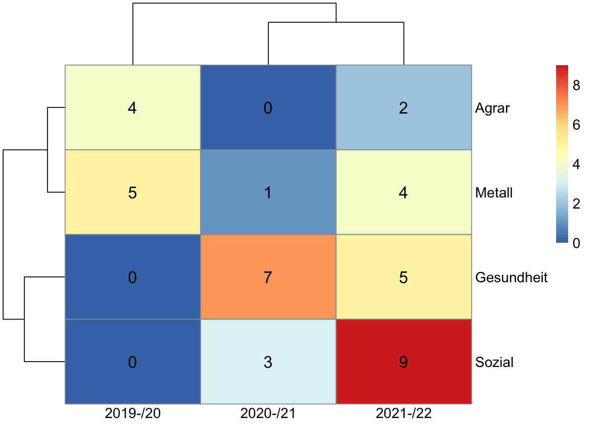

Mentor:innenqualifizierung am ibp
Projektrahmen
Die Mentor:innenqualifizirung am Institut für Berufspädagogik (ibp) ist an die Qualitätsoffensive Lehrerbildung des Bundesministeriums für Bildung und Forschung(BMBF) angeschlossen. Im Bundesland Mecklenburg-Vorpommern wird die Qualifizierung zusätzlich durch das Projekt „Lehren in M-V” des Landesweiten Zentrums für Lehrerbildung und Bildungsforschung Mecklenburg-Vorpommern (ZLB) unterstützt. Die Mentor:innenqualifizierung für Berufspädagog:innen ist in der zweiten Förderperiode der Qualitätsoffensive Lehrerbildung gestartet und findet in dem Zeitraum von September 2019 bis August 2022 statt.
Bei der Qualifizierungsreihe handelt es sich um ein Angebot der Universität Rostock. Beteiligt sind außerdem die Hochschule für Musik und Theater (HMT) und die Universität Greifswald. Koordiniert wird die Qualifizierung durch das ZLB. Das Kompetenzzentrum für Berufliche Schulen und das Institut für Qualitätsentwicklung M-V sind nicht an dem Projekt beteiligt. Damit Lehrende Referendar:innen begleiten dürfen, muss eine Qualifizierung an dem zuständigen lehrerbildenden Institut absolviert werden. Bei der Qualifizierungreihe, die über das Projekt angeboten wird, handelt es sich um ein zusätzliches, nicht verpflichtendes Angebot für Lehrende des Landes M-V.
Aus der Anbindung an die Projektstruktur ergibt sich ein Teil der Durchführung.
Struktur der Qualifizierung
Die Qualifizierung ist zweigeteilt. Es gibt allgemeine Module, die direkt durch die Projektleitung des Gesamtprojektes koordierniert und auch durchgeführt werden. Inhalte dieser Module sind eine Vorstellung der Studienstruktur, eine Wiederholung lerntheoretischer Ansätze und allgemeine Konzepte für das Mentoring von Studierenden während der Praxisphasen. Diese drei Module werden in den ersten Wochen der Qualifizierung absolviert und sind für die Teilnehmenden verbindlich. Zusätzlich gibt es in jedem Schuljahr eine Konferenz („Tag des Fachmentorings”), auf die die allgemeinen Module inhaltlich ergänzt werden. Diese Konferenz findet in der Regel nach den Winterferien statt. Zur allgemeinen Projektstruktur gehören auch vier Reflexionstreffen. Von diesen vier Treffen ist die Teilnahme an zwei Treffen verpflichtend. Gemein ist den allgemeinen Terminen, dass sie Instituts- und auch lehramtsübergreifend stattfinden. Die Teilnehmenden aus den beruflichen Schulen absolvieren diese Termine demnach mit Lehrenden aus allgemeinbildenden Schulen des Landes.
Zusätzlich zu den allgemeinen Modulen richten die jeweiligen Institute eine fachspezifische Modulreihe aus („Fachmentoring”). Die Gestaltung und die Anzahl der Module liegen in der Verantwortlichkeit der Institute. Am ibp haben in den drei Projektjahren vier bis sechs Veranstaltungen pro Schuljahr stattgefunden, die jeweils den Bedürfnissen der Teilnehmenden angepasst waren.
Umsetzung
Um einen Einblick in die Umsetzung zu gewähren, sollen hier die Schwerpunkt des aktuellen Schuljahres aufgeführt werden. Der Vermerk Studierende weist darauf hin, dass diese Module teilweise gemeinsam mit Studierenden des ibp gestaltet wurden.
| Termin | Inhalt |
|---|---|
| 30. September | Auftakt & Struktur des Studiums, Mentoring in der beruflichen Bildung |
| 28. September | Was macht gutes Mentoring aus? (Studierende) |
| 9. Dezember | Digitalisierung in der beruflichen Bildung |
| 20. Januar | Ganzheitliche Bildung und Ableitung für den Mentoringprozess |
| 24. März | Bewertung und Feedback im Mentoring |
| 12. Mai | Fachdidaktische Debatten (Studierende) |
Die Teilnehmenden wurden über unterschiedliche Zugänge gewonnen. Im ersten Durchführungsjahr wurden ausschließlich Lehrende aus den Fachbereichen der Metalltechnik und der Agrarwirtschaft für die Qualifizierung zugelassen. In den beiden Folgejahren war die Qualifizierung für alle Fachbereiche geöffnet. Es konnten demnach auch Lehrende aus den Bereichen der Gesundheits- und Sozialberufe, aus den elektrotechnischen Berufen und aus den IT-Berufen teilnehmen. Allerdings wurden aus den letzten beiden Bereichen keine Teilnehmenden gewonnen. Die Aquise erfolgte direkt über die Schulen, in der Regel über die Schulleitungen. Nach dem ersten Qualifizierungsjahr sind zunehmend Teilnehmende über Empfehlungen vormaliger Teilnehmender aquiriert worden.
Eine detailierte Übersicht zur Verteilung der Fachbereiche über die Projektjahre:
In den drei Projektjahren wurden entsprechend insgesamt 40 Lehrende aus beruflichen Schulen über das Projekt am ibp qualifiziert.
Geplant war eine Durchführung der einzelnen Module in Präsenz. Durch das Eintreten der Corona-Pandemie mussten für alle drei Schuljahre digitale Varianten für die Durchführung der Module entwickelt werden.
Durch das Projekt ist eine Vernetzung mit den Schulen entstanden, die Lehrer:innen in den Fachbereichen Metalltechnik, Agrarwirtschaft, Gesundheits- und Sozialberufe beschäftigen. Dabei ist es gelungen, weite Teile des Landes über das Projekt zu erreichen. Außerdem ist es über die Tage des Fachmetorings gelungen, Fachdidaktiker:innen und Mentor:innen zu vernetzen und in einen Austausch zu bringen.
Wissenschaftliche Begleitung
Die Durchführung des Projektes wurde wissenschaftlich begleiet. Die Ergebnisse wurden auf nationalen und internationalen Konferenzen präsentiert und in Artikeln ausgewertet. Eine Übersicht findet sich auf der Website des ibp Link.
Verbindung mit der Lehre
Das Projekt hat von Beginn an eng mit der Lehre am ibp zusammengearbeitet. So gab es Erhebungen mit Studierenden, die sich auf ihre Praxisphasen vorbereitet haben oder auch in den Auswertungen ihrer Praxisphasen waren. Außerdem sind im Rahmen des Projektes drei begleitende Masterarbeiten und eine Bachelorarbeit entstanden. Gleichzeitig wurden auch Austauschrunden zwischen den Studierenden und den Mentor:innen initiiert. So bekamen die Studierenden vor ihren Praxisphasen einen Einblick in die teilnehmenden Seminarschulen und konnten auch im Nachgang zu ihren Praxisphasen über Eindrücke und Perspektiven mit den Mentor:innen ins Gespräch kommen.
An den Konferenztagen („Tag des Fachmentorings”) ist es über das Projekt gelungen, auch die Fachdidaktiker:innen aus den Erstfächern zu gewinnen. So fand ein fachdidaktischer Austausch über das Instiut hinaus statt, in den die Mentor:innen einbunden waren.
Resonanz
Die Resonanz kann nur im Vergleich zu den anderen beteiligten Instituten bewertet werden, da andernfalls keine Vergleichskriterien vorliegen. Aus dieser Perspektive heraus lässt sich feststellen, dass es überdurchschnittlich viele Anmeldungen für die Qualifizierung am ibp gab. Das führte dazu, dass es mehr Anmeldungen als Plätze gab und damit nicht alle Anmeldungen berücksichtigt werden konnten. Die Lehrenden, die ein Interesse an der Teilnahme hatten, wurden allerdings im darauffolgenden Jahr kontaktiert und in die Qualifizierung aufgenommen.
Die Rückmeldungen zu den Modulen und auch zu den Austauschformaten mit den Fachdidaktiker:innen und den Studierenden waren ausschließlich positiv. Die Teilnehmenden äußerten ein generelles Interesse, auch zukünftig an Veranstaltungen mit dem Intitut teilnehmen zu wollen.
Verstetigung
Das gebildete Netzwerk wird auch nach Beendigung des Projektes aufrechterhalten werden. Insbesondere die Begleitung der Praxisphasen soll über diese Vernetzung intensiviert werden. Das ibp plant, auch über den Projektzeitraum hinaus eine Qualifizierung für Mentor:innen anzubieten und dieses Format in die Regelstruktur zu integrieren. Die genauere Umsetzung wird derzeit besprochen.
Vermutlich wird der Umfang der Qualifizierung geringer ausfallen. Das Format der Reflexionstreffen wird voraussichtlich nicht in die Qualifizierung integriert werden. In welcher Form eine zukünftige wissenschaftliche Begleitung stattfinden wird, steht noch nicht fest.